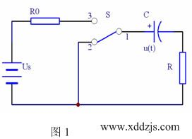
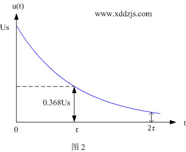

心电图机时间常数在不同规程中检定方法的分析
本文发表在中国计量杂志 2015.2
崔秀艳 佳木斯市质量技术监督检验中心
郜大华 郑州市先达电子技术有限公司
模拟心电图机的检定依据《JJG 543- 2008 心电图机检定规程》（以下简称规程1），数字心电图机的检定依据《JJG 1041- 2008 数字心电图机检定规程》（以下简称规程2），在这两个规程中，心电图机的时间常数的检定从表述和具体操作上有差别较大，但实质上是否相同呢，本文将对此作较为详细的分析。
1 时间常数检定在2个规程中的表述和操作
在规程1中，时间常数的检定方法是这样的：检定仪输出2mV峰峰值、周期为1s的方波信号，被检心电图机描记波形，测量波形从开始（此处不讨论过冲问题）到320ms处电压幅度的衰减量，如果这个衰减量不大于2mm（即200μV）,则心电图机的时间常数不小于3.2s。
在规程2中，时间常数的测量方法是这样的：检定仪输出2mV峰峰值、周期为10s的方波信号，被检心电图机描记波形，测量信号幅度衰减到初始值37%所经历的时间间隔，这个时间间隔就是心电图机的时间常数。合格心电图机的时间常数不小于3.2s。
从两种规程的表述可以看出二者的异同点。
相同点:二者对心电图机的时间常数的要求是相同的, 时间常数不小于3.2s。
不同点1：规程1只要求判断心电图机的时间常数合格与否，而不需要给出具体数据。规程2则要求先测出时间常数，再判断合格与否。
不同点2：二者采用的方波信号的周期不同。
二者表面上看，差别比较大，实质是否相同呢？
心电图机时间常数通常用来反映放大缓变信号的能力，与前级放大器与中间级放大器之间RC耦合电路有关。通过RC电路中电容的隔直作用，将来自心电电极信号（经前级放大过的）中的直流极化电压成分滤除，而只允许电极信号中变化的心电信号通过。下面我们从电路时间常数的定义出发，来进行分析。
2 RC电路时间常数分析计算

在图1所示电路中，单刀双掷开关S原来处于触点1和3导通位置，电源对电容器C充电，充电结束，电容器端电压是Us。
在时间t=0，开关S触点1和2导通，电容器通过电阻R放电，通过电路计算可以得到，任意时刻电容器端电压u(t)的表达式：
其中τ=RC，它称为RC电路的时间常数，当电阻单位为Ω，电容单位为F时，τ的单位为s。
需要说明的是电路的时间常数τ是RC电路本身所决定的，与外加的信号源无关。
可以计算出：
即经过一个时间τ/10后，电压衰减了9.5%，或为原值的90.5%。
经过一个时间常数τ后，电压衰减了63.2%，或为原值的36.8%。
电容器端电压u(t)随时间变化的曲线如图2所示。

如果Us =2mV，心电图机灵敏度S=10mm/mV,则Us在心电图纸上对应20mm。
在t=τ/10，u(τ/10) =1.81mV, 在心电图纸对应18.1mm。换句话来说,电压在t=τ/10处,电压衰减量为0.19mV, 在心电图纸上对应1.9mm。
在t=τ，u(τ) =0.736mV, 即电压衰减到0.736mV,在心电图纸上对应7.36mm。
从以上计算可以看出:
规程1是在t=τ/10处，通过测量电压衰减量，判断电图机时间常数是否合格，即在t=τ/10=0.32s处，如果电压衰减量不大于0.19mV(对应1.9mm)，则时间常数不小于3.2s。为了方便测量，规程1中把电压衰减量定义为0.2mV(对应2.0mm),这将会带来5%的系统误差。
规程2采用的心电图时间常数的测量方法是基于RC时间常数的基本定义，即在电压衰减为原值的37%处，找出对应时间，给出心电图机的时间常数。当然用37%代替36.8%也会带来0.54%的系统误差。
3 结束语
通过对RC电路时间常数的分析计算和对2个心电图机规程关于时间常数检定的比较，我们可以得出如下结论：
第一：2种方法在本质上是一样的，都是基于RC电路的定义和分析计算。
第二：规程1采用的方法便于具体操作和记忆，其图示清楚，且能满足准确性的要求。由于考虑的是τ/10时的数据，所以可以采用周期为1s激励信号,心电图机不需要走较多的纸。
第三：规程2是基于时间常数的定义,准确普适，由于没有图示，对检定员的能力要求稍高一点。采用周期为10s激励信号,心电图机需要走较多的纸。
第四：本文给出了RC电路电容放电曲线,这可以很好地帮助检定员理解时间常数的概念，正确地分析处理所测试的心电图数据。